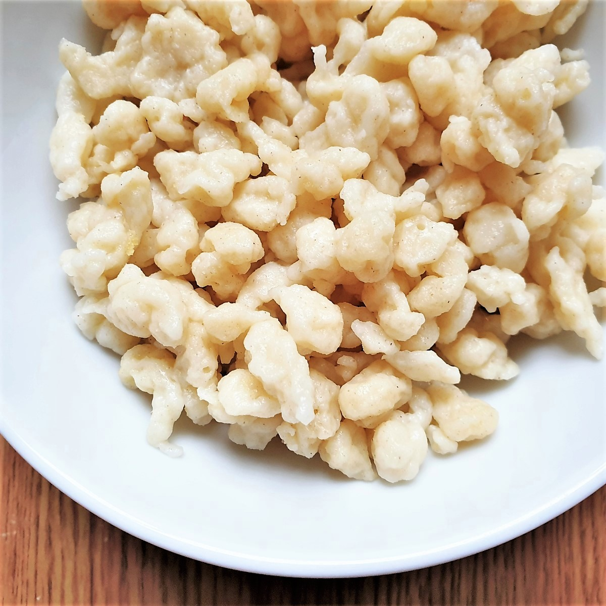

Spaetzle
Homepage

Simple delicious German egg noodle that goes great with roast beef and gravy.
Ingredients
- 4-1/2 cups white flour
- 4 eggs
- 1/2 cup milk
- 1 tsp salt
Directions
- Mix all ingredients with water as needed to form a thick, sticky consistency. Mix vigorously until smooth.
- Boil water, string into boiling water & stir gently. Allow water to come to a boil, then remove when noodles float on top.